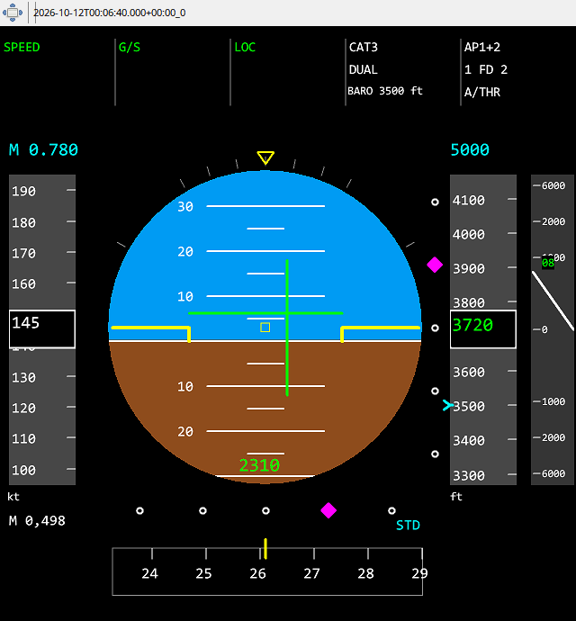

The top FMA separates thrust, vertical and lateral modes, approach capability and AP/FD/A/THR status. Read the fields together: LOC or G/S capture alone does not imply full autoland. FBW ARINC validity is part of the data, so an invalid transmission must not appear as a normal zero. Fenix coverage depends on the addon version and recorded variables.
IAS/ALT tapes show current values and available targets. FD bars are guidance commands. ILS symbols show valid LOC/GS deviations. BARO minima use barometric altitude, RADIO radio height; NO DH is a separate selection, not zero. A barometric minimum marker appears within the altitude tape range. QNH/STD and IAS/Mach follow recorded selections.
The screenshot uses synthetic values to show the geometry. In your recordings, missing FMA, FD or minima remain missing; forcing A320 in Debug does not create FBW/Fenix data.
